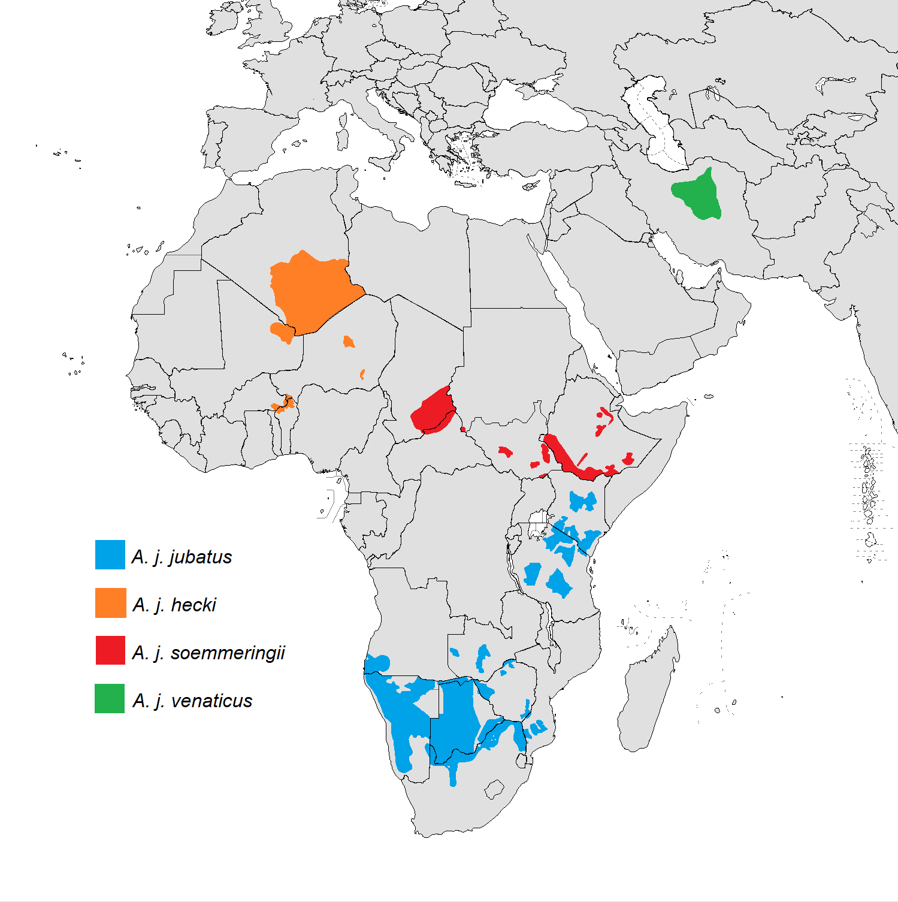
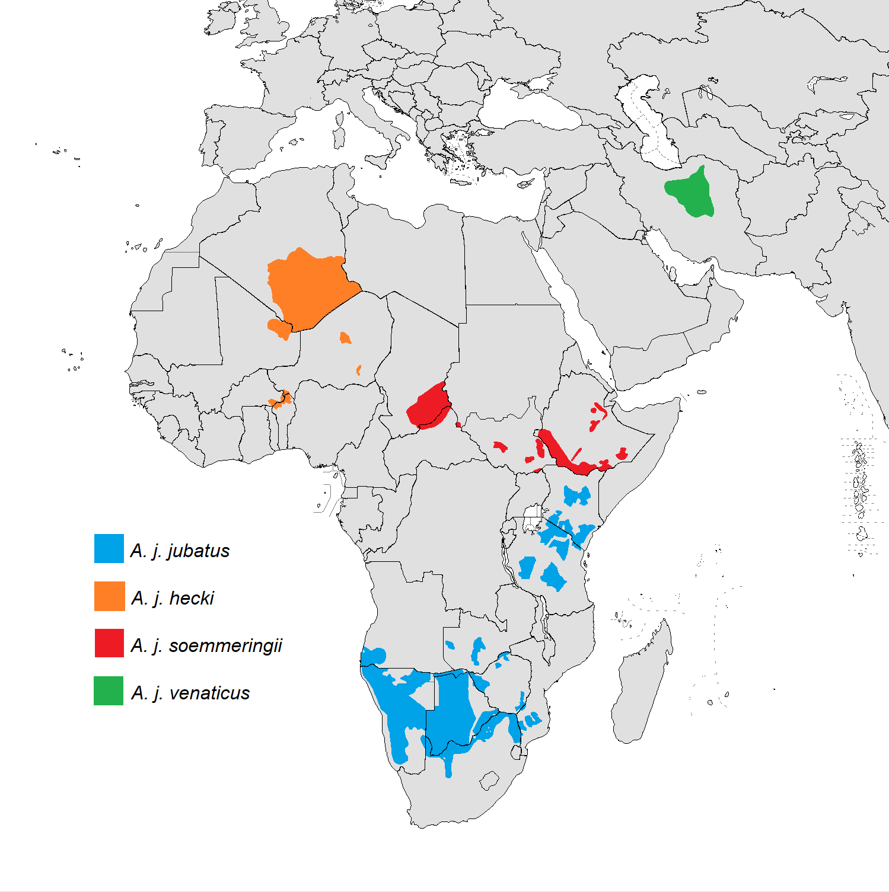

Verbreitung des Geparden in Afrika und im Iran
Der Gepard war einst fast in ganz Afrika verbreitet, mit Außnahme mancher Waldgebiete in Zentralafrika. Außerdem waren Vorderasien, Indien und Teile Zentralasiens besiedelt.
Heute ist er fast nur noch in Afrika in Teilen der Sahara zufinden. Desweiteren gilt der Gepard in Indien und Teilen Zentralasiens als ausgestorben.
Geparde sind reine Savannen und Steppentieren. Sie bevorzugen Bereiche mit hohem Gras, welches ihnen als Deckung dient.
Hügel nutzen Geparde als Ausschaupunkte. Zu viele Bäume und Sträucher sind für den Gepard eher ungeeignet,da sie dort ihre Schnelligkeit dort nicht ausspielen können.
In Halbwüsten (noch keine eigentliche Wüste) kommen Geparde dagegen gut zurecht, wenn sie genügend Beute finden.
In Gefangenschaft braucht ein Gepard mindestens 30 m2 Außengehege und 15m2 Innengehege.
Hier die Quellen zu den Bildern und Infos